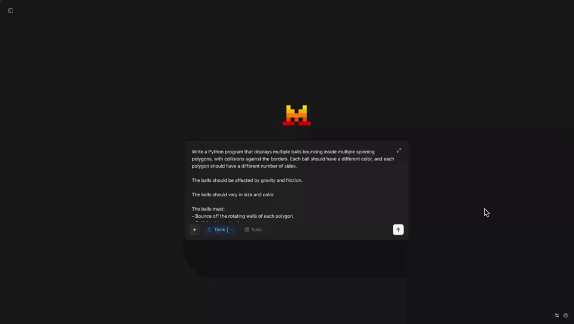
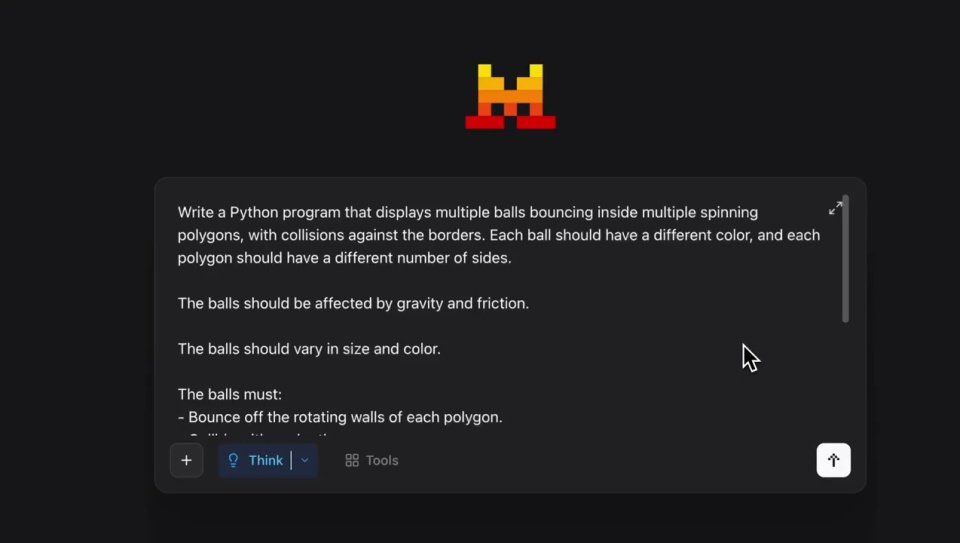
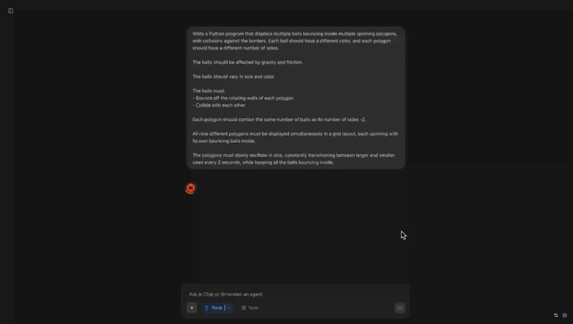
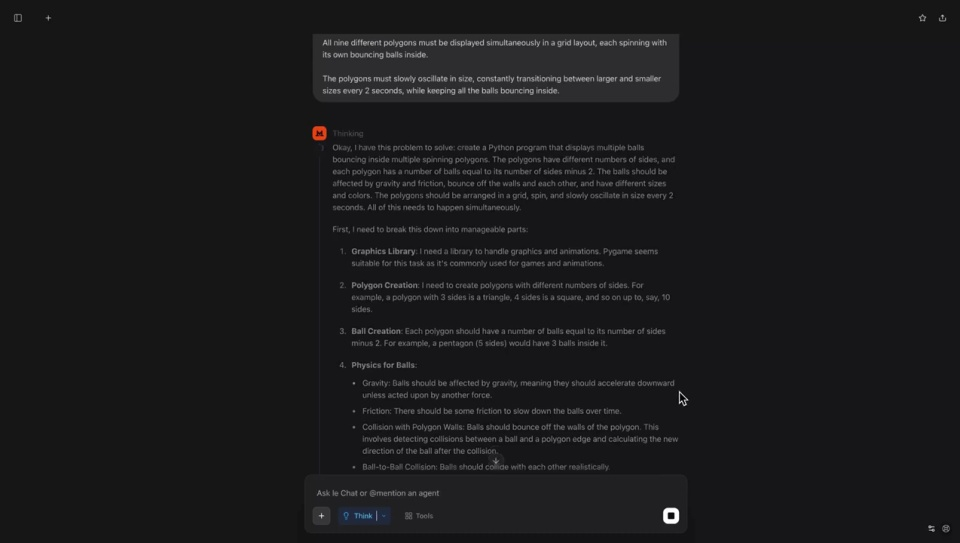
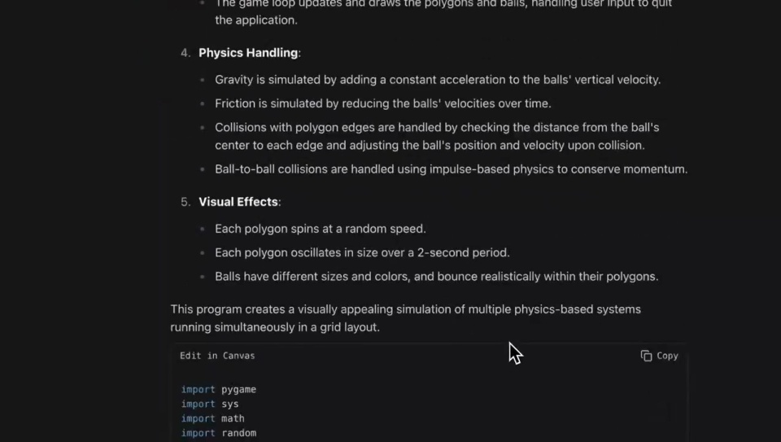
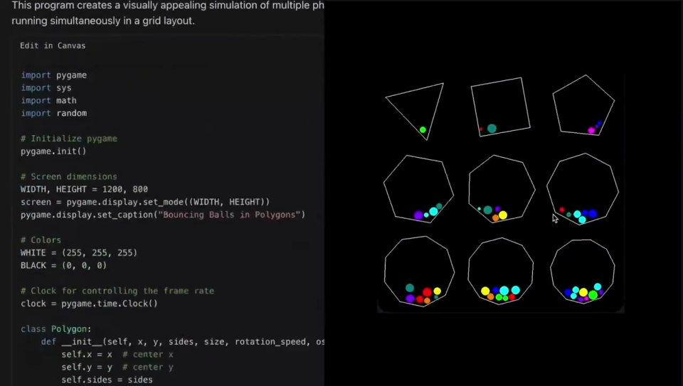

Mistral / V036
Magistral 发布
先交代程序要完成的具体要求，再让代码旁边出现连续运行的结果。整个画面围绕同一个编程任务推进。
构图与编排 可播放 · 可替换内容
整体编排规则示例
查看 HTML 源码
<!doctype html><html lang="zh-CN"><meta charset="utf-8"><meta name="viewport" content="width=device-width,initial-scale=1"><title>Magistral 发布 · sequence</title><style>html,body{margin:0;width:100%;height:100%;overflow:hidden;background:#151515}canvas{display:block;width:100%;height:100%;object-fit:contain}</style><body data-mode="sequence"><canvas width="1000" height="600"></canvas><script src="data.js"></script><script src="common.js"></script><script src="scene.js"></script><script src="bridge.js"></script></body></html>画面元素提示词思考段落说明代码九宫格多边形彩色小球
MOTION LANGUAGE
动作与构图
局部动作 · 构图规则
01
长提示词分成可扫读的要求
深色聊天界面上，提示框居中，正文按条目排列。等宽字用于代码，普通无衬线用于说明；橙色标志和少量彩色小球提供强调。
02
从要求走到解释与代码
从要求走到解释与代码规则示例
查看 HTML 源码
<!doctype html><html lang="zh-CN"><meta charset="utf-8"><meta name="viewport" content="width=device-width,initial-scale=1"><title>Magistral 发布 · sequence</title><style>html,body{margin:0;width:100%;height:100%;overflow:hidden;background:#151515}canvas{display:block;width:100%;height:100%;object-fit:contain}</style><body data-mode="clip" data-start="0" data-end="29"><canvas width="1000" height="600"></canvas><script src="data.js"></script><script src="common.js"></script><script src="scene.js"></script><script src="bridge.js"></script></body></html>提示输入完成后缩回聊天布局，接上分段说明。镜头跟随当前重点向下移动，保留一部分上文，帮助阅读顺序衔接。
03
运行结果占据完整一侧
运行结果占据完整一侧规则示例
查看 HTML 源码
<!doctype html><html lang="zh-CN"><meta charset="utf-8"><meta name="viewport" content="width=device-width,initial-scale=1"><title>Magistral 发布 · sequence</title><style>html,body{margin:0;width:100%;height:100%;overflow:hidden;background:#151515}canvas{display:block;width:100%;height:100%;object-fit:contain}</style><body data-mode="clip" data-start="29" data-end="36.3"><canvas width="1000" height="600"></canvas><script src="data.js"></script><script src="common.js"></script><script src="scene.js"></script><script src="bridge.js"></script></body></html>代码留在左边，右边展示九种多边形。边数递增形成规则，小球颜色区分个体；图形旋转、缩放时始终留在各自格内。
运行段保持足够长的连续运动，让观众能看见边界、球体与变化之间的关系。
04
换一种编程案例
可改成图表、布局或交互组件。先写可看见的要求，再选择对应结果画面；保留提示、说明、代码、运行四层，但不必让每层占相同时间。
SEQUENCE
段落与节奏
点击段落，定位到上方编排示意。






画面参考 · 离散静帧
KEEP THE RELATIONSHIPS
制作其他主题
- 可换成其他编程任务，但必须有可视化验收结果。
- 多边形边界和球体运动共同承担验收画面，保持九格清晰分离。
制作约束
提示词 / 思考段落 / 说明 / 代码 / 九宫格多边形 / 彩色小球
- 先展示具体约束，再显示解释和代码，最后并排运行结果。
- 多边形边数逐格增加，小球在边界内运动，形成可见验证。
- 镜头从输入近景拉远到聊天，再推近最终双栏。